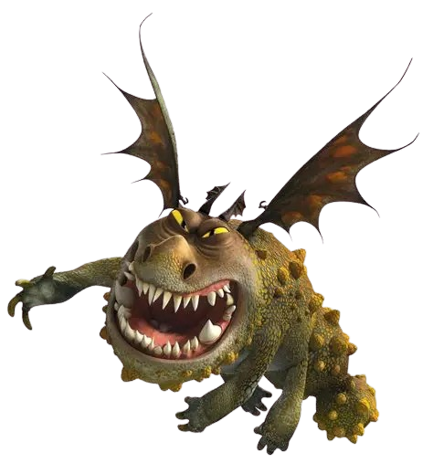

Rocks, fire weed, mush, mutton, Catastrophic Quaken eggs

Description
The Gronckle is a small but incredibly tough dragon with a round rock-like body and powerful jaws capable of
chewing and melting stones into lava blasts. Despite its slow flight and sluggish movements, it is highly durable
and surprisingly strong. Known for its lazy yet lovable nature, the Gronckle is fiercely loyal to those who earn its trust.